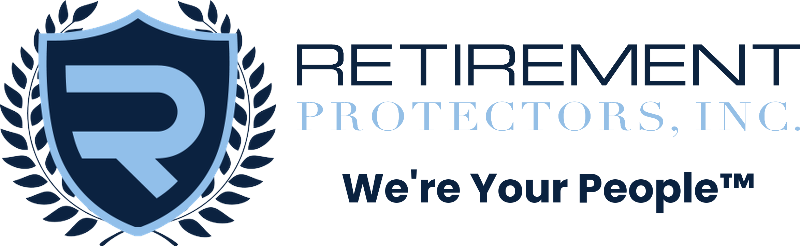
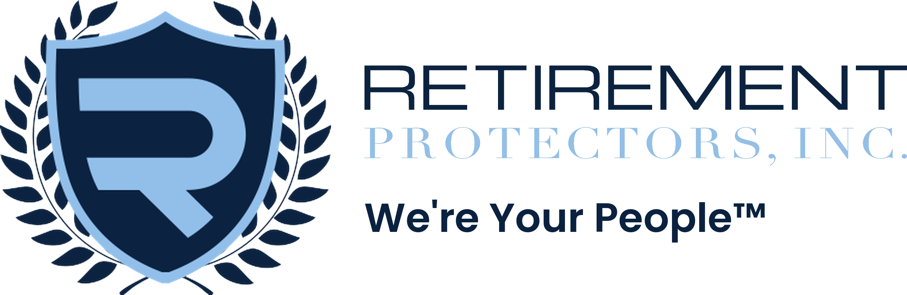
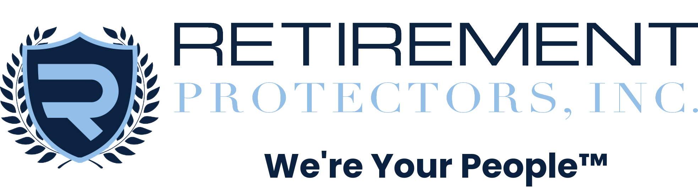

You liked H but the small shield baked into the wordmark was a problem. Here are six refinements — the big standalone shield REPLACES the small one entirely, paired with clean "RETIREMENT PROTECTORS, INC." text and the tagline underneath.
Old H: Big shield on left AND the small shield baked into the existing wordmark = two shields, confusing.
All six H-ish variants: wordmark is cropped to TEXT ONLY (x=532 onward), small shield removed cleanly. Big shield on the left stands alone. Zero duplicated marks.
Vary: shield scale (1.0x – 2.0x), gap between shield and text, tagline size/weight, tagline alignment (left / center / right under the text).



Drop the letter in #musashi. Winner locks as the official rpi-logo-v2.png + white variant. Then single PR: locked logo + MYST back cover (Lacy / Dexter / Kaelin) + bigger fonts filling cover and panels.